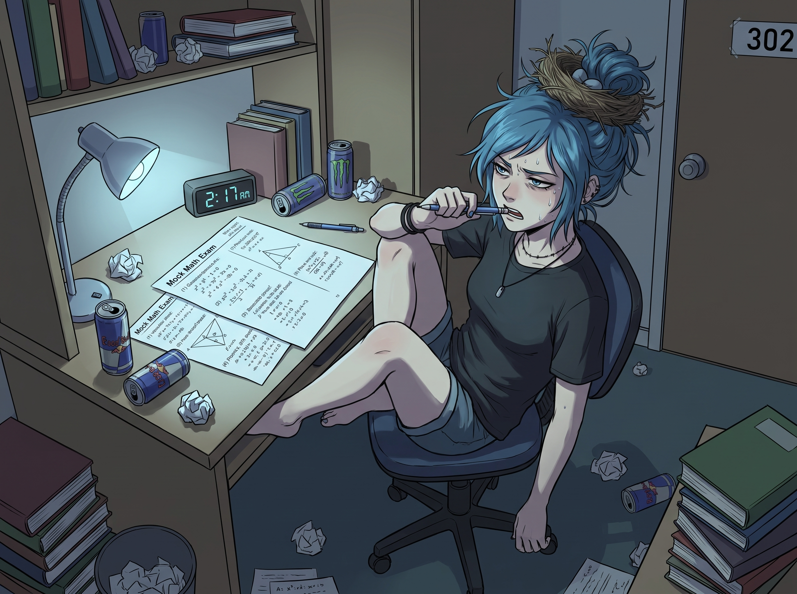

苦讀夜

凌晨兩點十七分，302 寢室的空氣黏稠得像化油器裡凝固的劣質機油。
書桌上的檯燈散發著慘白的冷光，正中央攤著一份印滿二次方程式與幾何證明的畢業會考數學模擬試卷。Chloe 頂著一頭被自己抓成了鳥窩的藍髮，整個人以一種違背人體工學的扭曲姿勢滑在轉椅上，雙腿大喇喇地搭在桌沿，手裡的自動鉛筆被她咬得滿是牙印。
「Maxine……求妳了……」Chloe 發出一聲長達十秒的瀕死哀鳴，腦袋無力地向後仰倒，喉結劇烈滾動，「我的大腦皮層已經徹底報廢了。如果現在把我的頭蓋骨掀開，妳只會看見一灘煮糊了的通心粉，而不是什麼該死的拋物線對稱軸。」
坐在床邊披著灰色針織開衫的 Max 甚至連頭都沒抬。她戴著一副平日裡極少拿出來的黑框平光眼鏡，手裡拿著紅筆，正不緊不慢地翻閱著標準答案解析。
「妳還有四道題沒做，Chloe。」Max 的語氣平靜得像是在念天氣預報，「而且第十二題的頂點坐標妳把負號算丟了三次。現在是回溯也救不回來的第 0.5 個錯誤。」
「去他的頂點坐標！老娘這輩子開皮卡難道要先算好拋物線才能踩油門嗎？！」
眼看硬抗無效，Chloe 骨子裡的無賴雷達瞬間全功率啟動。她雙腿一收，轉椅在木地板上滑出刺耳的摩擦聲，整個人直接撲到了床沿邊。
她一把抱住 Max 的腰，把下巴死死卡在 Max 的大腿上，仰起那張帶著黑眼圈但寫滿「楚楚可憐」的臉。她甚至故意眨巴著那雙大眼睛，連平時粗獷的煙嗓都強行夾出了一種極其罕見的軟糯奶音：
「長官……Max……我最親愛的時間領主……」Chloe 伸出手指，輕輕扯了扯 Max 的衣角，「妳摸摸我的額頭，它現在比老皮卡的排氣管還要燙。再算下去，阿卡迪亞灣沒被風暴吹翻，全鎮第一帥的朋克戰神就要在 302 寢室因急性代數中毒英年早逝了……我們去睡覺好不好？只要五分鐘……不，睡到明天中午！我保證醒來後能一口氣背出十個公式！」
說著，Chloe 順勢把整張臉埋進了 Max 溫熱柔軟的腹部，像隻大型樹懶一樣瘋狂蹭來蹭去，試圖用體重直接把 Max 壓倒在床墊上。
換作平時，Max 早就被這記「朋克撒嬌暴擊」弄得耳根通紅舉手投降了。
但今晚不同。
Max 垂眼看著懷裡這個裝死耍賴的大型犬，腦海裡忽然閃過白天的畫面——Kate 頂著兩個黑眼圈，在圖書館陪 Chloe 逐條梳理歷史年表，一杯接一杯地灌著濃縮洋甘菊茶硬撐；Victoria 難得放下平時那副事不關己的傲慢，親自打了三通電話給家族律師團，只為了替 Chloe 爭取一個豁免名額。那些畫面在她腦子裡一閃而過，原本快要被撒嬌攻勢瓦解的心軟，瞬間被一股更堅定的責任感取代。
Max 緩緩放下紅筆，低頭看著懷裡這個試圖裝死的龐然大物。她的眼神甚至沒有波動一下，只是優雅地伸手摘下了眼鏡，放在床頭櫃上。
緊接著，Max 伸出雙手，精準地捏住了 Chloe 兩側柔軟的臉頰肉，毫不留情地往外用力一扯——
「嗷！痛痛痛！Maxine 妳謀殺親友啊？！」Chloe 疼得倒吸一口涼氣，整個人瞬間彈了起來。
「聽著，Chloe Elizabeth Price。」Max 雙手叉腰，跪坐在床上居高臨下地俯視著她，小巧的臉上浮現出一種近乎教導主任級別的冰冷威嚴，「Kate 為了幫妳整理文科筆記，今晚喝了兩大杯濃縮洋甘菊茶；Victoria 甚至動用了私人律師團給妳弄來了合法的應試豁免資格。如果妳明天因為一道基礎拋物線題掛在及格線上，妳猜 Victoria 會把那套粉色草莓圍裙焊在妳身上多久？」
提到「草莓圍裙」，Chloe 渾身一個激靈，靈魂深處的恐懼瞬間壓過了生理性睏意。
「現在。」Max 指了指那張冰冷的書桌，語氣不容置疑，「把妳那雙長腿從老娘的床上挪開。坐回椅子上，把最後四道題解出來。否則……」
Max 微微瞇起眼睛，露出了一個溫柔卻讓人後背發涼的微笑：
「我就用時間回溯，把剛才妳抱著我大腿撒嬌叫『長官』的那三十秒，循環播放錄進我的相機音頻裡，明天一早發給全校廣播站。」
「……靠。妳這個披著鹿皮的冷血法西斯獨裁者。」
Chloe 悲憤欲絕地咬著牙，一邊揉著被扯紅的臉頰，一邊罵罵咧咧地挪回了轉椅前。她抓起那支快被咬爛的鉛筆，重重地在草稿紙上戳出了一個黑點，嘴裡念念有詞地開始畫輔助線：
「$y$ 等於 $a$ 乘以 $x$ 減 $h$ 的平方……負 $b$ 加減根號下……等老娘拿到畢業證，第一件事就是把這本代數書塞進排氣管裡燒成灰！」
身後，Max 重新戴上眼鏡，嘴角泛起一抹得逞的弧度，端起桌上的溫水輕輕抿了一口，深藏功與名。